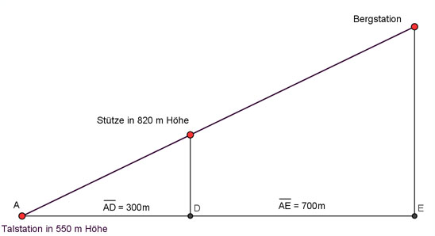
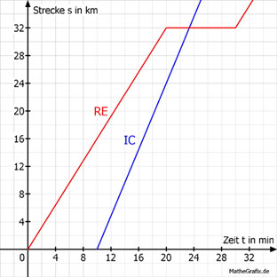
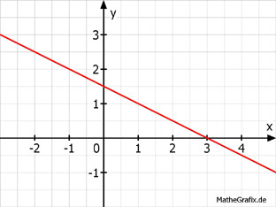

Aufgabe 9
Die Gerade zeigt die Abhängigkeit der Kosten y für einen
Leihwagen von der gefahrenen Strecke x.
Bestimmen Sie die Funktionsgleichung der Geraden.
 y = 0,25x +
y = 0,25x +
Wie löse ich Matheaufgaben?
Lineare Funktionen
Sie sehen ein gelbes Eingabefeld und die
Schalter: Prüfen und Lösung.
Tragen Sie Ihr Ergebnis ein, prüfen Sie es
oder starten Sie eine Lösung.
Ergänzen Sie die Wertetabellen für die Graphen der Funktionen:
Aufgabe 1 y = 2x x -2 2 y 4
Aufgabe 2 y = -3x x -2 2 y 6
Aufgabe 3 y = 0,4x x -4 4 y 1.6
Aufgabe 4 y = - 0,8x x -1 4 y 0,8
Aufgabe 5 Ein Flugzeug verbraucht auf 200 km 1800 l Kerosin. a) Wie lautet die Funktionsgleichung, die den Verbrauch V abhängig von der Strecke s beschreibt? b) Wie lautet die Funktionsgleichung, die die Strecke s abhängig vom Verbrauch V beschreibt? c) Ergänzen Sie die Wertetabelle für den Graphen der Funktion V abhängig von s.: s in km 0 200 V in l 1800 d) Welche Strecke hat das Flugzeug nach einem Verbrauch von 10 000 l zurückgelegt? e) Wie viel l Kerosin verbraucht es für eine Strecke von 6 000 km?
Aufgabe 6 y = 0,5x + 4 x -2 4 y 6
Aufgabe 7 y = -4x + 60 x -4 10 y 76
Aufgabe 8 y = x - 2 x -3 3 y 1
Aufgabe 9 Die Gerade zeigt die Abhängigkeit der Kosten y für einen Leihwagen von der gefahrenen Strecke x. Bestimmen Sie die Funktionsgleichung der Geraden.
Bestimmen Sie die Steigung m der Geraden, die durch folgende Punkte geht:
Aufgabe 10 A(2|1); B(6|9)
Aufgabe 11 A(-1|-2); B(5|5) m = ----- 6
Aufgabe 12 A(6|0); B(3|-3)
Aufgabe 13 A(-2|5); B(8|-7) m =
Bestimmen Sie die Steigung m der Geraden und den Abschnitt b auf der y-Achse:
Aufgabe 14 y = 2x + 1
Aufgabe 15 y = -0,5x + 7 m =
Aufgabe 16 y = -x - 1
Aufgabe 17 y = 2x m =
Ermitteln Sie die Funktionsgleichung der dargestellten Geraden:
Aufgabe 18

Aufgabe 19
y = -2x +
Aufgabe 20

Drei gleich große Gefäße werden mit Wasser gefüllt. Zu Beginn ist Gefäß A leer, im Gefäß B stehen 0,1 l und im Gefäß C stehen 0,5 l Wasser. Die Füllgeschwindigkeit beträgt 50 ml/s. Ermitteln Sie die Abhängigkeit der Füllmenge M in l von der Füllzeit s für die 3 Gefäße. Ergänzen Sie die Wertetabellen.
Aufgabe 21 Gefäß A: M = 0,05s s 0 10 M 0,5
Aufgabe 22 Gefäß B:
Aufgabe 23 Gefäß C: M = + 0,5
Ermitteln Sie die Gleichung der Geraden, wenn gegeben ist:
Aufgabe 24 P(3|5); b = 2
Aufgabe 25 P(2|5); b = -1 y = x - 1
Aufgabe 26 P(2|-2); b = -4
Aufgabe 27 P(2|1); m = 4 y = x - 7
Aufgabe 28 P((5|7); m = -3
Aufgabe 29 P(6|-4); m = -0,5 y = x - 1
Aufgabe 30  Die Talstation einer Seilbahn liegt in einer Höhe von 550 m. Die erste Stütze steht in einer Höhe von 820 m und ist 300 m von der Talstation entfernt. Die Bergstation ist 700 m von der Talstation entfernt. a) Welche Steigung hat die Bahn? b) Ergänzen Sie die Wertetabelle für den. Graphen von h in Abhängigkeit von l. Abstand l in m 100 400 Höhe h in m 640 910 c) Auf welcher Höhe liegt die Bergstation?
Aufgabe 31
Ein gleichmäßig ansteigendes Flugzeug befindet sich 1 200 m nach dem Start auf einer Höhe von 460 m. 4,5 km nach dem Start auf einer Höhe von 955 m. a) Berechnen Sie, wie schnell das Flugzeug steigt. b) In welcher Höhe liegt die Startbahn? Auf einer Höhe von m.
Aufgabe 32 4 Werkstätten haben folgende Tarife für einen Ölwechsel: Werkstatt A: Preis/Liter Öl 7 €; Arbeitspauschale 6 € Werkstatt B: Preis/Liter Öl 4,50 €; Arbeitspauschale 8 € Werkstatt C: Preis/Liter Öl 6 €, Arbeitspauschale 9 € Werkstatt D: Preis/Liter Öl 9 €, Arbeitspauschale 5 € a) Wie lautet die Funktionsgleichung für die Kosten K abhängig von der Ölmenge M für die Werkstatt C? b) Welche Werkstatt verlangt 32 € für den Ölwechsel, wenn die Ölmenge 3 l beträgt?
Aufgabe 33

Eine Motorpumpe hat einen 20 l Tank. Im Betrieb verbraucht sie 2,5 l/Stunde. a) Welcher Graph zeigt diesen Sachverhalt? b) Wie lautet seine Funktionsgleichung für die Abhängigkeit des Tankinhalts I von der Betriebsdauer t? c) Nach wie viel Stunden sind noch 4 l im Tank? Nach h
Wie lauten die Funktionsgleichungen der dargestellten Geraden?
Aufgabe 34

Aufgabe 35 > y = x + 1
Aufgabe 36

Aufgabe 37
> y = x - 0,5
Aufgabe 38 Die Gerade A hat eine Steigung von 2, die Gerade B eine von -2,5. Die beiden Geraden schneiden sich im Punkt (3|-2). Wie lauten die Funktionsgleichungen der beiden Geraden?
Aufgabe 39 Eine Kerze ist nach einer Brennzeit von einer Stunde von 18 cm auf 16 cm abgebrannt. a) Wie lautet die Funktionsgleichung für die Abhängigkeit der Kerzenlänge l von der Brennzeit t? b) Wie lang ist die Kerze nach einer Brennzeit von 3,5 Stunden? c) Wie viel Stunden hat die Kerze gebrannt, wenn sie noch 4 cm lang ist? Sie hat Stunden gebrannt.
Aufgabe 40 Ein Autoverleih verlangt 0,10 € pro gefahrenen Kilometer und eine Grundgebühr von 55 € pro Tag. a) Wie lautet die Funktionsgleichung für die Abhängigkeit der Kosten K von der gefahrenen Strecke S pro Tag? b) Vervollständigen Sie die Wertetabelle. S 0 200 K 55 c) Wie viel kosten 250 km an einem Tag? d) Welche Strecke hat ein Kunde zurückgelegt, wenn er 124 € bezahlen muss?
Aufgabe 41 Es stehen 2 Handytarife zur Auswahl. Tarif 1: Grundgebühr 12 € und 20 Cent pro Minute Tarif 2: 50 Cent pro Minute a)Tragen Sie die fehlenden Werte in die Tabellen ein. Tarif 1: Minuten m 50 100 Kosten K in € b) Wie viel kosten 150 min in Tarif 1? c) Ein Kunde muss in Tarif 2 45 € Bezahlen. Wie viel Minuten hat er telefoniert? Es sind Minuten.
Aufgabe 42 Eine Pumpe, die 500 l Wasser pro Stunde liefert, versorgt ein Gemüsefeld. a) Tragen Sie die fehlenden Werte für die Wassermenge M in l abhängig von der Zeit t in h ein. b) Wie viel l fördert die Pumpe in 5 h? c) Wie viel h braucht die Pumpe, um 3 200 l zu fördern?
Aufgabe 43 Vor Jahren kostete ein Telefonanschluss 6 Cent pro Einheit und eine Grundgebühr von 23,60 € im Monat. a) Tragen Sie die fehlenden Werte für die Kosten K in € E 400 800 abhängig von den telefonierten Einheiten E ein. K 47,60 71,60 b) Wie hoch war die Ersparnis bei 200 Einheiten im Monat, wenn ein Call by Call - Anbieter 4 Cent pro Einheit verlangte? c) Wie groß war bei 300 Einheiten der Unterschied zu einem Anbieter, der 5 Cent pro Einheit und eine Grundgebühr von 28 € verlangte? Unterschied €
Aufgabe 44 Eine Kerze hat eine Länge von 12 cm. Sie ist nach 3 Stunden abgebrannt. a) Tragen sie die fehlenden Werte für die Kerzenlange l in Abhängigkeit von der Brenndauer t ein. t in min 30 150 l in cm 10 b) Wie lang ist die Kerze nach 75 Minuten in cm? c) Die Kerze steht in einem Wasserbad und soll nach 135 Minuten ausgehen. Wie hoch muss das Wasser in cm stehen?
Ergänzen Sie die Wertetabellen für die Graphen der Funktionen:
Aufgabe 45 y = 3,5 x -3 3 y 3,5
Aufgabe 46 5y + 16 = 0 x -2 4 y 3,2
Aufgabe 47 2x + 3y - 15 = 0 x 0 3 y 3
Aufgabe 48 0,25x + 0,2y - 1 = 0 x -4 4 y 10
In welchen Punkten schneiden die Geraden die Koordinatenachsen?
Aufgabe 49 y = x - 2 Sx(|0)
Aufgabe 50 y = 3x + 5
Aufgabe 51 3 4 y = - --- x - --- Sx(--------|0) 2 7 21
Aufgabe 52 5x - 6y - 10 = 0
Aufgabe 53 14x - 9y + 21 = 0 Sx(|0)
Wie lautet die Funktionsgleichung der Gerade, die durch den Punkt (-4|3) geht
Aufgabe 54 und durch den Ursprung geht?
Aufgabe 55 und parallel zur Geraden y = x - 8 verläuft? y = x +
Aufgabe 56 und parallel zu einer Geraden mit der Steigung -1 verläuft?
Aufgabe 57 und parallel zur x-Achse verläuft? y =
Aufgabe 58 Ermitteln Sie die Gleichung der Geraden, die durch die Punkte P1(2|2) und P2(6|0) geht.
Aufgabe 59 Welche Punkte auf der Geraden y = 2x + 2, haben von der x-Achse den Abstand 4? A(1|4); B(|-4)
Aufgabe 60 Wie weit liegt der Punkt P(100|-150) unterhalb der Geraden y = -1,5x + 4?
Aufgabe 61
Wie lauten die Funktionsgleichungen der einzelnen Geraden? Gerade 2: y = ------- x - 2 3
Aufgabe 62
Ein Verein bietet seinen Besuchern 3 Tarife zur Auswahl: Tarif 1: Ein Saisonticket kostet 500 €. Tarif 2: Mitglieder zahlen einen Einmalbetrag von 150 € und 40 € Eintritt pro Spiel. Tarif 3: Der Eintritt zu jedem Spiel kostet 70 €. a) Welche Gerade gehört zu welchem Tarif? b) Für welche Anzahl von Spielen ist welcher Tarif am günstigsten?
Aufgabe 63 Ein Gärtner hat eine Regentonne aufgestellt, die maximal 8 600 l Regen auffangen kann. Zu Beginn eines gleichmäßigen Regens befinden sich noch 550 l in der Tonne. Um 16 Uhr sind in der Tonne 3 000 l, um 18 Uhr sind es 3 700 l. a) Wie viel Stunden muss es insgesamt regnen, bis die Tonne gefüllt ist? b) Wie viel Stunden muss es noch regnen, damit die Tonne gefüllt ist? c) Um wie viel Uhr hat es angefangen zu regnen? Nach h
Aufgabe 64
3 Radfahrer fahren zu einem 70 km entfernten Ziel. Radfahrer 1 macht unterwegs 2 Pausen. Radfahrer 2 startet als Letzter. Radfahrer 3 macht eine Pause. a) Welches Diagramm gehört zu welchem Fahrer? b) Mit welcher Durchschnittsgeschwindigkeit fahren sie zum Ziel? c) Mit welcher Geschwindigkeit musste Fahrer 1 auf dem letzten Abschnitt fahren, um zur selben Zeit wie Fahrer 2 am Ziel einzutreffen? d) Wie lautet die Gleichung der Geraden für den letzten Abschnitt von Fahrer 3? (Abhängigkeit der Strecke s von der Zeit t).
Aufgabe 65 Zu einem Badesee führen zwei Wege, der eine ist 25 km, der andere 40 km lang. Ein Junge und ein Mädchen benutzen auf ihrer Fahrt zum See den kürzeren Weg. Das Mädchen braucht mit dem Fahrrad 70 Minuten. Der Junge hat ein Mofa, das 30 km/h fährt. a) Berechnen Sie die durchschnittliche Geschwindigkeit des Mädchens in km/h. b) Wie viel Minuten kann der Junge später losfahren, um gleichzeitig mit dem Mädchen einzutreffen? c) Nach 30 Minuten macht das Mädchen eine Pause von 10 Minuten. Um die Zeit aufzuholen, fährt sie den Rest der Strecke schneller. Wie lautet die Gleichung der Geraden für diesen Abschnitt? (Strecke s in Abhängigkeit von der Zeit t) d) Wie viel Minuten später hätte das Mädchen mit der höheren Geschwindigkeit und ohne Pause losfahren können? Minuten später. e) Mit welcher Geschwindigkeit in km/h muss ein Auto auf der längeren Strecke fahren, wenn es 45 Minuten später losfuhr aber zur selben Zeit ankommen will?
Aufgabe 66  Ein Regionalexpress (RE) und ein Intercity (IC) fahren in die gleiche Richtung. Der RE fährt um 10 Uhr ab und bleibt nach 20 Minuten in einem 32 km entfernten Bahnhof stehen. Nach einem Aufenthalt von 10 Minuten fährt er mit der gleichen Geschwindigkeit weiter. Der IC fährt um 10.10 ab und hat nach 10 Minuten eine Strecke von 24 km zurückgelegt. a) Um welche Uhrzeit trifft der IC in der Haltestation ein? b) Bestimmen Sie die Funktionsgleichung (Strecke s abhängig von der Zeit t) für den IC. c) Wie viele Minuten später wäre der RE an der Haltestation angekommen, wenn beide gleichzeitig abgefahren wären?
Aufgabe 67 Bestimmen Sie c so, dass die Gerade y = 0,5x + c durch den Punkt P(4|3) geht. c =
Aufgabe 68 Ermitteln Sie die Gleichung einer linearen Funktion, für die gilt: f(0) = -0,5, f(3) = 2.
Aufgabe 69 Eine Gerade geht durch die Punkte A(1|2) und B(5|4). Bestimmen Sie den Steigungswinkel α der Geraden und den Schnittpunkt mit der y-Achse. Steigungswinkel α = °
Aufgabe 70 Liegen die Punkte A(-10|1), B(-2|-1) und C(2|-2) auf einer Geraden?
Aufgabe 71 Ergänzen Sie P(10|) für einen Punkt, der auf der Ursprungsgeraden liegt, und die durch den Punkt Q(0,25|0,2) geht?
Aufgabe 72 Wie lautet die Funktionsgleichung der Gerade, die durch die Punkte P1(-2|-3) und P2(2|-3) geht?
Aufgabe 73 Wie lautet die Funktionsgleichung der Parallelen zu y = -0,25x, die durch den Punkt (-6|0) geht? y = x - 1,5
Aufgabe 74 Ergänzen Sie Q( |1) für einen Punkt, der auf einer Senkrechten zu y = 7x - 21 liegt, und durch den Punkt P(3|0) gehen soll.
Wie lautet die Gleichung der Gerade, die
Aufgabe 75 zur x-Achse parallel liegt und durch den Punkt A(3|-2) geht? y = x - 1,5
Aufgabe 76 Wie lautet die Funktionsgleichung einer Parabel der Form y = ax2 + bx + c, wenn ihr Graph durch die Punkte P1(1|17), P2(-4|82) und P3(2|22) geht?
Aufgabe 77 Wie lautet die Funktionsgleichung einer Parabel der Form y = ax2 + bx + c, wenn ihr Graph durch die Punkte P1(1|4), P2(-1|8) und P3(3|8) geht? y = x2 - x
Eine Gerade geht durch die Punkte P(-2|2,5) und Q(1|1). Bestimmen Sie die Koordinaten des Punktes auf der Gerade, der
Aufgabe 78  den x-Wert 2 hat.
Aufgabe 79 den y-Wert 2 hat. P(|2)
Aufgabe 80 auf der x-Achse liegt.
Aufgabe 81 auf der y-Achse liegt. P(0|)
Aufgabe 82
Handelt es sich bei dem Viereck ABCD um ein Parallelogramm, ein Trapez oder um keins von beiden? A(0|0); B(2|-5); C(7|-3); D(5|2).
Stehen die beiden Geraden senkrecht aufeinander?
Aufgabe 83 y₁ = x und y₂ = -x
Aufgabe 84 y₁ = 2x + 3 und y₂ = 0,5x + 2
Bestimmen Sie die Gleichung der Geraden, die durch den Punkt P geht und senkrecht auf der angegebenen Geraden steht.
Aufgabe 85 y = x - 1 P(1|?)
Aufgabe 86 y = 0,1x + 3 P(5|?) y = -10x +|
Aufgabe 87 3y + x - 2 = 0 P(?|1)
Aufgabe 88 Laut einer Untersuchung ist das Gewicht G in kg von Männern abhängig von ihrer Größe h in cm. Der Zusammenhang ist: G = 0,88 * h - 78 für Männer größer als 160 cm. a) Bestimmen Sie das Gewicht eines Mannes, der 1,78 m groß ist. b) Mit welcher Gewichtszunahme pro cm ist bei Männern größer als 1,6 m zu rechnen? Mit kg/cm. c) Wie groß ist dann ein Mann in cm mit einem Körpergewicht von 90 kg?
Aufgabe 89 Im Blut eines Menschen sind rote Blutkörperchen. Sie bestehen zu 90% aus Hämoglobin. Der Hämoglobingehalt H im Blut einer Frau ist auf 90g/Liter gesunken. Durch eine Behandlung steigt der Hämoglobingehalt bei der Frau täglich um 0,24 g/Liter. a) Wie lautet die Funktionsgleichung für H in Abhängigkeit von der Zeit t? b) Nach wie viel Tagen liegt der Hämoglobingehalt bei 120 g/Liter?
Aufgabe 90 Eine Krankenschwester legt einem Patienten um 9.10 eine 0,5 l Infusionsflasche an. Um 9.25 sind noch 0,35 l in der Flasche. a) Wie viel Liter sind nach 30 Minuten ins Blut gelangt? b) Nach wie vielen Minuten ist die Flasche leer? Nach Minuten. c) Nach wie vielen Minuten sind noch 75% in der Flasche?
Aufgabe 91 Ein Schüler hat 200 € bei der Sparkasse angelegt. a) Wie lautet die Funktionsgleichung für die Zinsen Z abhängig vom Zinssatz p? a) Bei welchem Zinssatz ist sein Kapital nach einem Jahr auf 300 € angewachsen? b) Bei welchem Zinssatz hat es sich verdoppelt?
Aufgabe 92 Ein Unternehmer hat 5000 € zu 4% angelegt. a) Wie lautet die Funktionsgleichung für die Zinsen Z abhängig von der Anzahl der Tage T? b) Wie lautet die Funktionsgleichung für das angewachsene Kapital K abhängig von der Anzahl der Tage T? c) Nach wie viel Tagen beträgt der Zins 10 €? Nach Tagen.
Aufgabe 93 Ein Betrieb stellt Bauteile für die Metallindustrie her. Er hat dabei fixe Kosten von 12 000 €. Die Herstellung eines Bauteils kostet den Betrieb 45 €. Er kann es für 105 € pro Stück verkaufen. a) Wie hoch sind die Kosten für 250 Bauteile? b) Der Betrieb hat Kosten von 21 990 €. Wie viel Bauteile hat er gefertigt? c) Der Betrieb verkauft 275 Bauteile. Wie hoch ist sein Gewinn?
Aufgabe 94 Die Profiltiefe bei Autoreifen nimmt gleichmäßig ab. Nach 20 000 km war sie 4 mm, nach 32 000 km noch 3 mm. a) Wie viel km kann man mit dem Reifen noch fahren, wenn eine Profiltiefe von mindestens 1 mm vorgeschrieben ist? Noch km. b) Um wie viel mm nimmt die Profiltiefe pro 10 000 km ab? c) Welche Profiltiefe hatte der Neureifen in mm?
Aufgabe 95 Temperaturen kann man in Grad Celsius °C oder in Grad Fahrenheit °F messen. 0 °C entsprechen dabei 32 °F und 100 °C entsprechen 212 °F. a) Eine Temperatur steigt um 1 °C. Um wie viel °F ist sie dann gestiegen? b) Wie lautet die Abhängigkeit der Temperatur in °F von der in °C? c) Sie haben 41°C Fieber. Wie viel Grad sind das in °F?
Aufgabe 96 Ein Taxifahrer verlangt für eine Fahrt von 7 km 8,10 €. Für eine Fahrt von 9 km verlangt er 9,70 €. a) Wie lautet die Funktionsgleichung für die Abhängigkeit der Kosten K von der Strecke s? b) Wie hoch ist die Grundgebühr? Sie beträgt € c) Wie weit ist ein Kunde gefahren, wenn er 12,40 € bezahlen muss?
Aufgabe 97 In einem Schwimmbecken steigt beim Befüllen der Wasserspiegel um 0,4 m pro Stunde. Im vollen Becken steht das Wasser 2,5 m hoch. a) Wie lange dauert es in h, bis das Becken gefüllt ist? b) Das Becken ist 4 Stunden befüllt worden. Wie hoch steht das Wasser in m?
Aufgabe 98 Eine Firma pumpt einen Ölbehälter leer. Nach 9 Minuten enthält er noch 12,8 m³ Öl, nach 15 Minuten noch 8 m³. a) Nach wie vielen Minuten ist der Behälter leer? Nach Minuten. b) Wie viel m³ Öl waren zu Beginn in dem Behälter?
Aufgabe 99 Ein Fallschirmspringer befindet sich in einer Höhe von 400 m und sinkt 320 m pro Minute. a) In welcher Höhe befindet er sich nach 30 s? b) Nach welcher Zeit in min ist er am Boden?
Aufgabe 100 Ein Kunde hat bei der Sparkasse ein Guthaben von 18 000 €. Er hebt monatlich 1000 € ab. a) Nach wie vielen Monaten ist das Kapital aufgebraucht? b) Wie hoch ist sein Kapital nach 10 Monaten? Es beträgt €
Aufgabe 101 5000 € zu einem Zinssatz von 12% an. a) Wie hoch sind die Jahreszinsen? b) Wie hoch ist der Zinssatz, wenn Sie 325 € Jahreszins bekommen?
Aufgabe 102 Ein ICE fährt um 8.00 Uhr mit einer Durchschnittsgeschwindigkeit von 120 km/h von Ort A zu dem 400 km entfernten Ort C. Ein IC fährt ebenfalls um 8.00 mit einer Durchschnittsgeschwindigkeit von 100 km/h von Ort B aus zu Ort C. A und B sind 40 km voneinander entfernt. Der IC und der ICE fahren in dieselbe Richtung. a) Nach wie viel Minuten fährt der ICE durch den Ort B? b) Wie viel Minuten ist der IC später in C? c) Nach wie viel Stunden und nach wie vielen Kilometern überholt der ICE den IC? d) Wie groß müsste die Geschwindigkeit des ICE sein, um gleichzeitig mit dem IC in C einzutreffen? km/h e) Wie weit müsste der Ort B von A entfernt sein, damit ICE und IC gleichzeitig in C eintreffen?
Aufgabe 103 Die Marathonstrecke ist 42,195 km lang. Läufer 1 schafft sie in 2 h 58 min 50 s. Läufer 2 in 2 h 10 min 11 s. a) Berechnen Sie die Geschwindigkeiten der beiden Läufer in km/h. b) Wie viel km muss Läufer 2 noch laufen, wenn Läufer 1 im Ziel ist? c) Nach wie viel Stunden liegen die beiden Läufer 8 km auseinander?
Aufgabe 104 In einer Badewanne befinden sich 150 l Wasser. Es laufen 12 l Wasser pro Minute ab. a) Wie viel Liter Wasser befinden sich nach 12 Minuten in der Wanne? b) Nach wie viel Minuten ist die Wanne leer? c) Nach wie viel Minuten sind noch 90 l in der Wanne? Nach Minuten.
Aufgabe 105 Birken wachsen 1,6 m pro Jahr. a) 2008 ist eine 4 m hohe Birke gepflanzt worden. In welchem Jahr ist sie 14 m hoch? b) Wie hoch ist sie nach 20 Jahren?
Aufgabe 106 Eine Tropfsteinhöhle ist 4 m hoch. Von oben wachsen Stalaktiten mit einer Zunahme von 0,36 mm/Jahr nach unten. Von unten wachsen Stalagmiten mit 0,15 mm/Jahr nach oben. a) Ein Stalaktit ist im Jahr 2010 300 mm lang. Wie viel mm ist seine Spitze nach 100 Jahren vom Boden entfernt? b) Ein Stalagmit ist im Jahr 2010 150 mm hoch. Vor wie viel Jahren begann sein Wachstum? Vor Jahren. c) Wie viele Jahre würde es dauern, bis der Stalaktit 400 mm lang ist?
zurück